Луна для товарища Сталина
Еще большим ворохом слухов и самых невероятных предположений, чем полеты вокруг Земли, обросла история высадки людей на Луну.
Начать же позвольте с мифа, в реальность которого лично я совершенно не верю, но который весьма показателен для порядков того времени.
НА ЧТО НАДЕЯЛСЯ ГЕНЕРАЛИССИМУС? В статье известного писателя Федора Абрамова «Вокруг да около» есть такой эпизод. Старый колхозник, расхваливая былые порядки, произносит такую фразу: «При товарище Сталине мы на Луну летали и держали там гарнизон. А лысый наш дурак (это он так непочтительно отзывается о Н. С. Хрущеве. — С. С.) теперь только рогатые шарики в небо запускает да дворняжек».
Речь, как вы понимаете, в последнем случае о первом и втором искусственных спутниках Земли, наделавших в конце 50-х годов столько шуму на Западе. Ну а насколько верна информация о лунных проектах товарища Сталина? Неужто такую экспедицию удалось сохранить в столь глубокой тайне, что о ней слыхивали лишь старый колхозник да писатель Абрамов? Что стоит за этим анекдотом? Действительно, некоторые официальные высказывания тогдашнего руководителя СССР по лунной проблеме и по сей день вызывают недоумение. Известно, например, что в августе 1945 года на Потсдамской конференции, где присутствовали главы государств — победителей Второй мировой войны, Сталин вдруг без всякой связи с предыдущим вопросом предложил обсудить проблему… раздела территорий на Луне. А заодно подписать соглашение о несомненном приоритете СССР в этой сфере с правом решающего голоса у его руководителей.
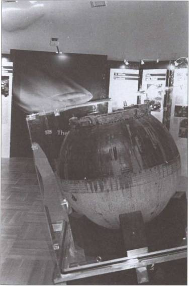
Обгоревший шар спускаемого аппарата — вот и все, что остается от ракеты и космического корабля после спуска с орбиты.
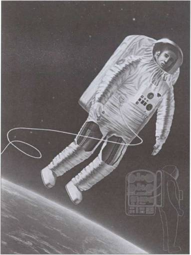
В 1960-е годы космические скафандры считались секретными, и на рисунках в общедоступной литературе их устройство приводилось весьма приблизительно.
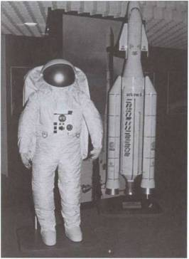
125-килограммовый скафандр, разработанный европейскими специалистами для полетов на французском корабле «Гермес».
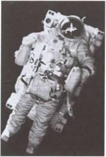
«Летающее кресло», или «космический мотоцикл», для перемещения в открытом космосе, испытанное космонавтом А. Серебровым. Американцы, как известно, постарались обойтись газовым пистолетом.
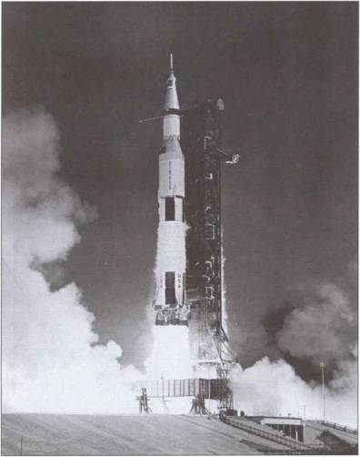
Старт ракеты «Сатурн-5», уносящей к Луне очередную экспедицию «Аполлон».
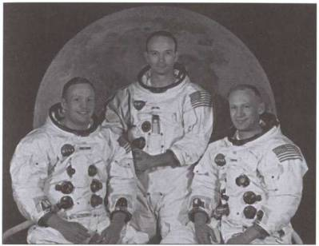
Знаменитая тройка астронавтов — экипаж «Аполлона-11», впервые совершившего высадку на Луну. Слева — Н. Армстронг, в центре - М. Коллинз, справа — Э. Олдрин.
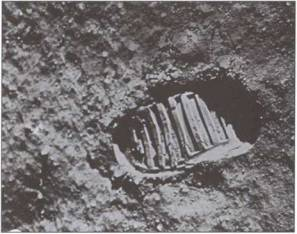
Отпечаток башмака Н. Армстронга на лунной поверхности.
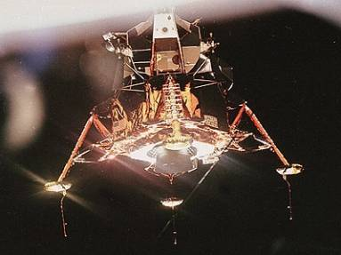
Посадочный модуль «Орел».
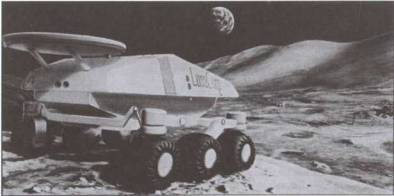
Так, возможно, будет выглядеть луноход будущего.
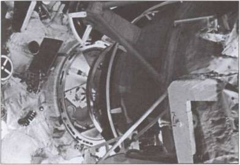
Стыковочный узел станции «Мир» — достаточно сложное хозяйство.
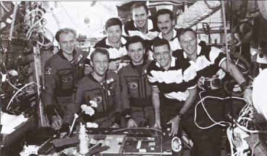
Фото на память внутри станции «Мир» во время очередной экспедиции.
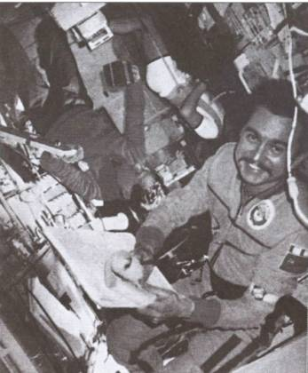
Станция «Салют-7» изнутри.
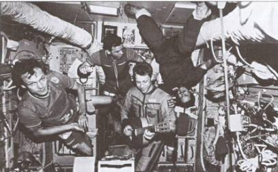
Как видите, пока внутри МКС не очень просторно.
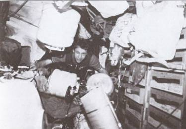
На МКС прибыл очередной «грузовик». Идет его разгрузка.
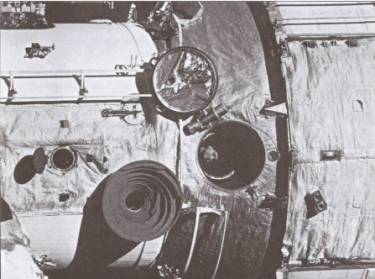
Так выглядит МКС с борта причаливающего «Шаттла».
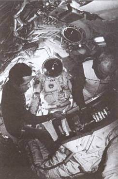
Подготовка к очередному выходу в открытый космос. Проверяется работоспособность выходных скафандров.
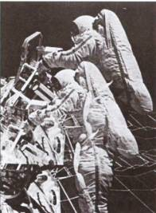
Космонавты в открытом космосе.
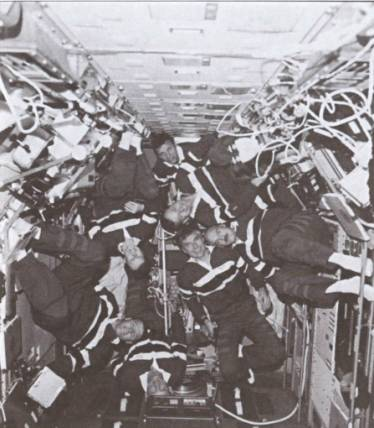
Экипаж внутри «Шаттла».
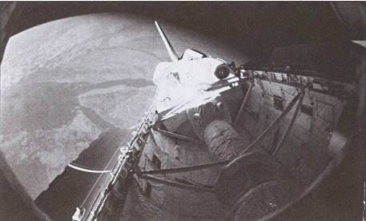
Грузовой отсек «Шаттла» в открытом состоянии.
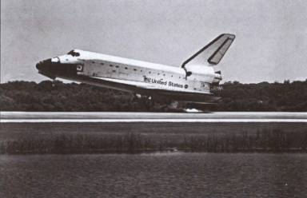
Полет закончен. «Шаттл» приземляется.
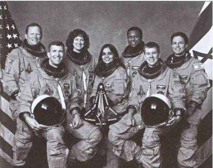
Экипаж «Колумбии» перед стартом. Все счастливо улыбаются…
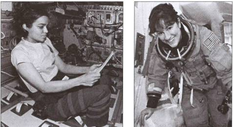
При посадке «Колумбии» погибли вместе со всеми и две женщины — Калпана Чавла и Лорел Кларк (слева).
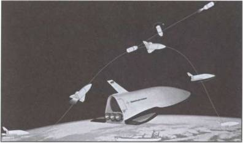
Так должен выглядеть в полете немецкий «челнок» «Хоппер».
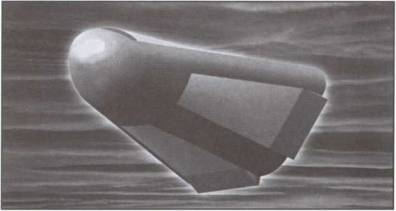
Проектируемый европейский космический аппарат «Angel».
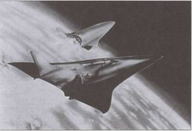
«Челнок» «Зенгер» должен стартовать со «спины» носителя примерно так…
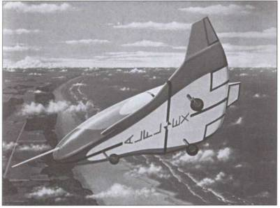
Испытания в атмосфере японского корабля «Ajlex».
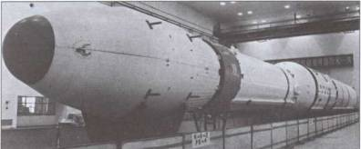
Китайская ракета-носитель «Великий поход».
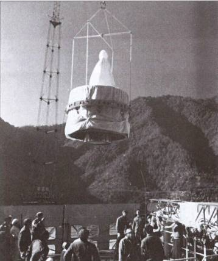
Части ракет доставляются на космодром с величайшей аккуратностью.
Об этом эпизоде, в частности, вспоминает американский историк Роберт Майлин, приезжавший в Потсдам в качестве переводчика при президенте США Гарри Трумэне. В его книге, вышедшей в 1966 году под названием «Перед Хиросимой был Потсдам», есть такой эпизод:
«Трумэну вначале показалось, что он ослышался или слова „дяди Джо“ ему неправильно перевели.
„Простите, господин Сталин. Вы, конечно, имеете в виду раздел Германии?“ — переспросил он.
Сталин затянулся своей знаменитой трубочкой и очень четко повторил:
„Луны. О Германии мы уже договорились. Я имею в виду именно Луну. И учтите, господин президент, у Советского Союза есть достаточно сил и технических возможностей, чтобы доказать наш приоритет самым серьезным образом“».
Американские аналитики тогда решили, что «дядюшка Джо» просто в очередной раз блефует, но спустя полгода после этого странного разговора вышло официальное постановление советского правительства о приоритетном развитии в СССР ракетной техники и организации нескольких научно-исследовательских институтов по данной тематике. И в это в разоренной войной стране!..
А ведь официальная история оставила от сталинского периода только воспоминания об экспериментальных ракетах, едва поднимавшихся на несколько сот метров, и знаменитых «катюшах». На что же тогда надеялся «вождь всех народов»?
Знаменитый папанинец, Герой Советского Союза Е. К. Федоров, по словам кандидата физико-математических наук Валентина Псаломщикова, по этому поводу сказал: «Ходили слухи, что в конце 30-х годов Сталин в глубокой тайне проворачивал какой-то грандиозный космический проект — вроде бы эстакаду для запуска кораблей в космос чуть ли не по эскизам Циолковского».
Кстати, тогда же был снят рекламный художественный фильм «Космический рейс», где фигурировала эта самая эстакада. Достроить ее помешала война, и не только она одна… Перед самой войной у нас был разгромлен Ракетный НИИ, арестовали Королева, Глушко и других талантливых ракетчиков. Так что реализовывать оказалось некому.
Тем не менее в 1937 году был создан второй Наркомат авиационной промышленности. В отличие от первого он подчинялся непосредственно Сталину. И до прихода к власти Н. С. Хрущева даже известнейшие конструкторы Туполев, Лавочкин, Ильюшин не имели ни малейшего представления о деятельности этого загадочного наркомата.
17 февраля 1937 года в Колонном зале Дома союзов перед писателями, работающими над произведениями по оборонной тематике, выступил нарком обороны К. Е. Ворошилов. Расписывая высокую боеготовность Красной армии, он не преминул сообщить и возможности использования лунного плацдарма для развертывания решающего успеха. А когда после этого комкор Примаков изволил пошутить в Академии Генштаба, что нарком собирается, видимо, доскакать до Луны на тачанках, то тут же угодил под трибунал.
Именно в это время в глубокой тайне в нескольких десятках километров от Киева, на месте нынешней Чернобыльской АЭС (вот — место-то заклятое какое), срочно возводился суперсекретный объект «Киев-17». Здесь, кроме военного городка, строились аэродром с несколькими полосами для приема транспортной авиации, 8 заводов, склады и стартовый комплекс.
Однако материально-технические средства на это строительство были потрачены зря. Комплекс предполагалось завершить к июлю 1941 года, но началась война и при отступлении его пришлось срочно взрывать.
Правда, говорят, аналогичный комплекс строился также в Сибири, поближе к источникам рабочей силы — лагерям с зэками. И там его после войны вполне могли достроить. Но насколько реально технически в то время было осуществить полет на Луну?
ПРОЕКТЫ ИЛИ ПРОЖЕКТЫ? Говорят, перед своей кончиной известнейший наш летчик-испытатель, Герой Советского Союза Сергей Анохин признался друзьям, что еще в сороковых годах XX века пилотировал ракету.
Еще раньше, в 30-е годы, приходя каждое утро на работу в знаменитый ГИРД, Фридрих Цандер, как известно, говорил сотрудникам вместо обычного приветствия: «Вперед, на Марс!»
Энтузиазм масс был необыкновенный, и многие вполне серьезно верили, что не сегодня, так завтра мы действительно полетим в космос, на Луну, Марс и другие планеты.
Однако на самом деле дела шли далеко не столь блестяще, как того хотелось. Приглашенный на работу в тот же ГИРД Ю. В. Кондратюк работать там не согласился, поскольку боялся, что при спецпроверке, неизбежной при приеме в подобные учреждения, станет известно, что никакой он не Кондратюк, а недобитый интеллигент Шаргей, в свое время дезертировавший как от красных, так и от белых.
А ведь именно этот человек, не будем забывать, разработал тот план экспедиции на Луну, которым впоследствии и воспользовались американцы.
«Ну, хорошо, — скажете вы, — Кондратюк работать побоялся. Но были ведь другие: Циолковский, Цандер, Королев, наконец…»
Да, были. Но К. Э. Циолковский, и в лучшие-то свои годы занимавшийся все больше теоретизированием, к концу жизни практически совсем ослеп и оглох, так что работник из него был, сами понимаете, никакой… Цандер в 1933 году скоропостижно скончался в возрасте 46 лет — сказались, видимо, годы работы без выходных и отпусков…
Возглавляемая им питерская Группа изучения реактивного движения (сокращенно ГИРД) совместно с московским отделением, а также Газодинамической лабораторией (ГДЛ) и некоторыми другими подразделениями, правда, в том же 1933 году была преобразована в РНИИ — Реактивный научно-исследовательский институт, но толку от этого оказалось не так уж много. В 1937–1938 годах все его руководство, включая С. П. Королева, Г. Э. Лангемака и других, было репрессировано. И Королеву еще повезло — он угодил в Магадан. Лангемака же попросту расстреляли.
И это происходило как раз в то время, когда, по идее, вовсю должны были разворачиваться работы по созданию ракет, могущих поднять человека в космос. В самом деле, не на тачанках же на Луну добираться?…
Но, быть может, прав был Иосиф Виссарионович, сказавший как-то, что незаменимых у нас нет, и на смену арестованным пришли другие люди, еще более талантливые? Ведь Россия, как известно, богата самородками…
Однако, если бы это было так, с началом войны Сталину не пришлось бы возвращать из лагерей уцелевших военачальников, налаживать работу «шарашек». Не так много оказалось в России образованных и толковых людей, чтобы ими можно было швыряться без разбора.
Та же «катюша» была создана еще до войны, и возглавивший РНИИ Костиков смог лишь модернизировать установку. Ничего принципиально нового за всю Великую Отечественную войну в отечественном ракетостроении создано не было. БИ-1, как уже говорилось, тоже поставить на крыло не удалось. И догонять ушедших вперед немцев пришлось тому же С. П. Королеву вместе с выпущенными из лагерей товарищами.
ЛУННЫЙ СЛЕД ЧЕКИСТА. Тем не менее миф о наших грандиозных ракетных успехах оказался настолько устойчив, что отзвуки его докатились до наших дней.
Говорят, зимой 1988 года один из ведущих астрофизиков Китая, доктор Канг Маоканг представил на конференции в Пекине фотографии босой человеческой ступни на лунной поверхности! Несколько позже он обнародовал снимок, сделанный во время прилунения экипажа американского космического корабля «Аполло-11», на котором уже запечатлен целый человеческий скелет. Исследователь утверждал, что получил фотографии от «надежного источника в США».
Понятно, что заявление астрофизика повергло в изумление экспертов космических и разведывательных служб США. Один из них даже стал скрываться после того, как репортеры осадили его в Вашингтоне в каком-то ресторане. Официальные лица в США, имеющие отношение к снимкам, привычно отказались комментировать сенсацию.
«Я располагаю документами, доказывающими, что след человека на лунной поверхности был свежим и что скелет, бесспорно, принадлежит человеку. Вопрос в том, каким образом человеческий след и человеческий скелет попали на Луну, — настаивал ученый. — Это объясняется, очевидно, вмешательством внеземных живых существ, однако мы этого никогда не узнаем, если американцы не сделают достоянием общественности всю имеющуюся у них секретную информацию…»
Документы, предоставленные доктором Маокангом, имели гриф «совершенно секретно» и датировались 3 августа 1969 года. Это означает, что они были написаны спустя две недели после того, как астронавты Н. Армстронг и Э. Олдрин ступили (заметьте — в скафандрах!) на лунную поверхность 20 июля 1969 года.
Из имеющихся документов явствовало, что тогда американские эксперты пришли к выводу об отношении внеземных цивилизаций «как к отпечатку босой ноги, так и к скелету».
Однако есть и другой, чисто земной вариант интерпретации этих находок. Не столь давно одна из московских газет со ссылкой на бывшего сотрудника КГБ Вадима Петрова, некогда отвечавшего за безопасность и тайну личности космонавтов-испытателей СССР, «выдала на-гора» вот какую историю.
«Космонавты-испытатели — это вам не летчики-испытатели, — рассказал Петров. — О последних мы по крайней мере знаем, что они существуют на свете. Известны даже имена некоторых из них. О космонавтах-испытателях же, кроме меня, до недавнего времени знали только Генеральный секретарь КПСС, шеф КГБ и несколько врачей, конструкторов, операторов. Всего около пятнадцати человек. Это была одна из самых больших государственных тайн эпохи застоя, такой она остается и поныне.
Но я не могу больше молчать, потому что не понимаю, зачем нужно было городить столько секретов, скрывать от народа целую плеяду героев, даже саму их профессию замалчивать. Страна должна узнать, что существовала целая группа людей, беззаветно преданных своей Родине и готовых для высоких целей освоения космоса на все».
Так что же это были за люди?
«Наш отряд создали еще до полета Гагарина по инициативе тогдашнего шефа КГБ Семичастного. Тогда у КГБ не было уверенности в том, что автоматика, которой оснащали наши беспилотные станции, будет надежна, а на карту в этих полетах ставился престиж Страны Советов. Это было аксиомой: наши беспилотные станции должны летать безупречно и всегда возвращаться.
И вот тогда решили: ставить на некоторые из этих станций пилотный модуль, чтобы находившийся в нем космонавт корректировал выход на орбиту и другие маневры ручным управлением. Так, по мысли шефа КГБ, обеспечивалась надежность полетов и отрабатывались системы управления — как ручного, так и автоматического.
Понятно, в отряд набирались только добровольцы из КГБ, вызываемые на собеседование после предварительного заочного отбора. Все они давали подписку по форме „три нуля“ — высшая степень секретности.
Я мало знаю о первых полетах этих парней, поскольку сам попал в отряд только в 1969 году, когда полным ходом велись работы по созданию лунохода. Но, судя по тому, что к полету на Луну готовились двое — 13-й и 14-й номера, — я полагаю, что до старта лунохода была уже дюжина испытательных полетов.
Все мы знали, что 13-й и 14-й не вернутся из этого полета. Им предстояло, находясь в отдельном модуле рядом с луноходом, сразу после посадки исправить возможные повреждения, отладить настройку солнечных батарей и обеспечить наводку телекамер. Кстати, знаменитые съемки движущегося лунохода со стороны были сделаны именно этими ребятами.
…Когда мы провожали 13-го и 14-го в лунный рейс, многие, даже видавшие виды чекисты, плакали. Но эти ребята не дрогнули, довели до цели корабль, обеспечили выполнение всех программ. Пожалуй, это самый трагический эпизод в истории космонавтики.
Я думаю, они были не просто фанатиками патриотами. Ведь сама цель: „Увидеть Луну — и умереть“ — грандиозна и величественна. И сегодня, наверное, многие посчитают, что это стоит жизни».
БЕЗНОГИЕ КАМИКАДЗЕ? Интересно, что эту же версию поддерживают и другие литературные источники. Скажем, еженедельник «Мегаполис-Экспресс» не столь давно также ошарашил читателей подобной историей. Когда в свое время мы запускали на Луну луноходы, то внутри их были… люди! Это они, дескать, управляли машиной, выполняя команды с Земли. Ну а когда запасы воды, воздуха и пищи для этих доблестных суперагентов КГБ были истрачены, всех их постигла судьба собачки Лайки.
Несмотря на кажущуюся абсурдность этой истории, она имела и свои корни и свое дальнейшее развитие.
…Набор в группу космонавтов проводил неприметный «дедок с кривым шрамом на лбу, одетый в потертую физическую форму». А когда Омон Кривомазов и его друг Митек, отведав первый курсантский ужин, завалились спать, то проснулись они уже на Лубянке, инвалидами без обеих ног.
Такую вот жуткую историю разворачивает в своей повести «Омон Ра» Виктор Пелевин. Далее по ходу сюжета выясняется, что и командиры, учителя будущих космонавтов, полковники Халмурадов и Улчагин — тоже безногие да вдобавок еще и слепые. Постепенно начинает прорисовываться, и для чего все это сборище инвалидов автору понадобилось.
Оказывается, наши полеты в космос проходят совсем не так, как о том пишут в официальных отчетах. Вместо автоматики каждую отработавшую ступень отделяет человек-оператор. И тут же застреливается, поскольку, как известно, в космосе жить нельзя, так чего же мучиться? Ну а безногие все потому, что, во-первых, инвалид далеко не убежит. А во-вторых, меньше занимает места в отсеке и легче, конечно же… В общем, сплошная экономия.
И вот в полет отправляется ракета, которая должна доставить на Луну всем известный луноход. Управляют ею три товарища «Омона». Он же должен «прилуниться» и проехать на специальном вездеходе, сколько сможет. А после этого, понятное дело, тоже застрелиться, поскольку скафандра ему не дали, да и как жить на Луне?
Но Омон Кривомазов стреляться не захотел, так как по нечаянности выяснил, что «на Луне» можно дышать и жить. Он стал пробираться по какому-то длинному коридору-тоннелю, попал в некий зал и наконец-таки понял, что находится вовсе не на естественном спутнике нашей планеты, а в подземелье, где имитируются наши космические полеты. И где на глазах Омона разворачивается очередная имитация — выход двух космонавтов из корабля в открытый космос. А снимают все это операторы, находящиеся рядом. Потом, после тщательной редактуры, эти кадры покажут по телевидению, и страна, а с нею и весь мир будут думать, что данные события произошли на самом деле.
Повесть, правда, претендует на звание художественного произведения, и автор ее вовсе не ручается за документальность описываемых в ней событий. Но уже сам факт выхода произведения в свет настойчиво намекает, что такое вполне могло быть, скажем, во времена Л. П. Берии.
Конечно, меня, как и вас, после ознакомления с этой кошмарной историей тотчас заинтересовал вопрос: «А какие реальные факты могли послужить основой для сочинения подобного сюжета?»
И представьте, научно-техническое обоснование сему проекту отыскалось довольно скоро. И корни его вели опять-таки… вы догадались правильно, в то же РНИИ. Именно там еще до войны разрабатывался проект ВР-190, о котором мы уже говорили.
Конечно же, в проекте ученых речь шла о вполне здоровых, специально подготовленных пилотах из летчиков-истребителей. Но, помня об атмосфере, царившей в стране того времени, лично я вполне допускаю, что в случае надобности «спецы» из числа помощников Берии вполне могли скорректировать проект на свой лад. Тем более что ограничения по весу космонавтов на первых порах действительно были весьма жесткими — вспомните хотя бы: и Гагарин, и Титов, и другие космонавты первого набора были худощавыми людьми небольшого роста.